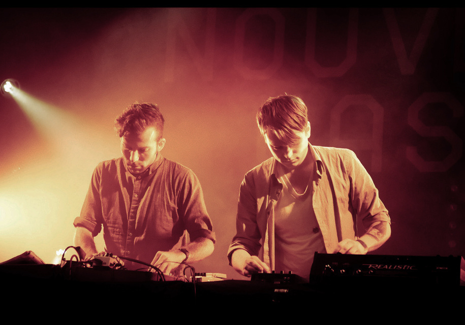

ASSS

ASSS is Alex Smith and Sean Pierce from Portland, OR. Collaborating since 2007, Smith and Pierce have released music on labels based in Berlin, Glasgow, Los Angeles, and Portland, and they have performed in many cities across North America and Europe.
send booking requests and other inqueries to:
contact@asss.online
ASSS on:
twitter
facebook
Resident Advisor
ASSS at MATA gellery in LA. Photo by John Wiese, 2013 
ASSS at Nouveau Casino in Paris, 2011